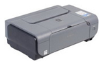

Зображення формується мікрокраплями спеціального чорнила, що викидаються на папір через сопла в друкувальній головці. Друкувальна головка рухається по горизонталі, а по закінченю друку кожної горизонтальної смуги зображення папір пересувається по вертикалі.
Переваги: якість і швидкість друку, цінові діапазони.
Недоліки: висока ціна заправки, здатність фарби засихати в соплах.
